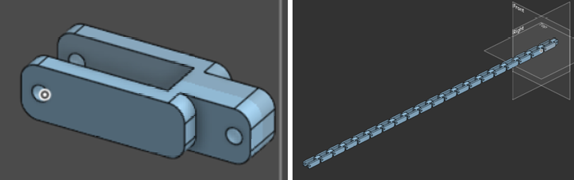
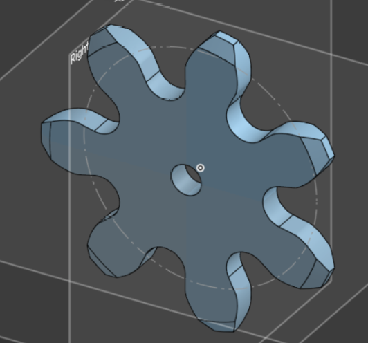

Sistema de orugas (descartado)
Durante la segunda semana se exploró un mecanismo de movimiento con orugas como alternativa a las ruedas. Esta página documenta qué se hizo y por qué se dejó de lado, porque puede ser útil si en algún momento se quiere retomar la idea.
Qué se diseñó
Eslabones de cadena: piezas diseñadas en OnShape que se unen para formar la oruga.
Sprocket: la rueda dentada que engancha los eslabones y los hace avanzar.


Primer prototipo de eslabones de cadena - 9/9/26


Primer prototipo de sprocket - 9/9/26
Nota
La funcionalidad del sprocket no llegó a probarse; solo existió como diseño.
Por qué se descartó
En la semana 3 se decidió dejar las orugas temporalmente y posiblemente de forma definitiva para aprovechar mejor el tiempo y enfocarse en lo que más beneficio traía al equipo.
Finalmente el robot pasó a un diseño con ruedas (Versión 2 y Versión 3).